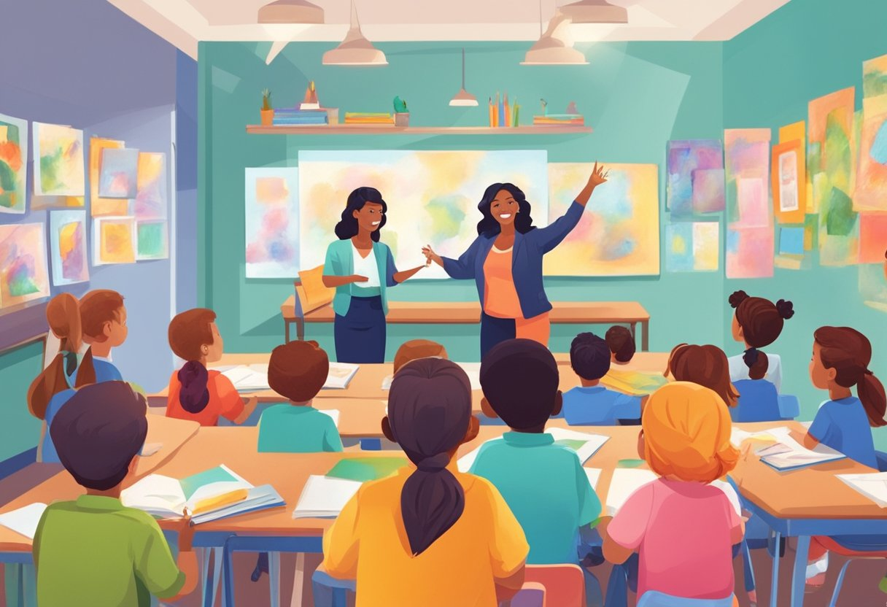

Art is a language for children—one that nurtures imagination, communication, and self-discovery. Explore how art unlocks creativity and confidence in the early years.
← Back to HomeArt is a great medium for building creativity in early childhood, allowing children to express unique ideas. Alghufali (2024) illustrates that painting and sculpting enhance creative thinking, critical for ages 0-8. This subject area converts imaginative thoughts into reality, boosting confidence levels and emotional growth. For instructors, art gives a glimpse into a child's mind, expressing their perspective through color and shape. Adding art ensures creativity is not overlooked, hence an essential teaching device to prepare young learners for creative thinking.
Theories like Gardner's multiple intelligences theory hypothesize art activates spatial and interpersonal skills. Alghufali (2024) agrees with this, identifying art activities activate divergent thinking among young children. Perceptions vary—some view art as inborn expression, others as learned skill developed through guidance. Leggett (2024) documents Australian and Italian teachers set down imaginative processes, demonstrating how the cultural atmosphere impacts art studies. Such an integration of theory and practice underscores the need for flexible instruction in line with each child's stage of development from infancy through age 8.
Art thrives with the right tools. Media like clay, recycled paper, and watercolors inspire children of any age. 0-2-year-olds utilize finger paint with safe materials to promote sensory play. 2-3-year-olds engage in collage sets with textured cut-outs, and 3-5-year-olds utilize sketchbooks for guided drawing. Drawing programs on digital tablets increase creativity by 6-8 years. Projectors that project artwork are technologies employed, but overuse can constrain hands-on skills. Educators must offer appropriate combinations of traditional and electronic resources with accessibility and safety to provide artistic discovery.
These sessions, backed by research, point towards how art teachers can facilitate creative development in all ages.